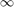

Graph
Contents
Graph < handle
Select Candidate Paths
This function allows select paths from single source node to single destination node. It also allows select paths from single source to multiple destinations if mutiple target nodes are specified.
[path_list, k] = CandidatePaths(this, K, src, dest_set)
Input Arguments
K: Number of candidate paths to be selected.
src: source node of the candidate paths.
Output Arguments
path_list: List of candidate paths.
k: actual number of the selected paths, it may be less than K.
Shortest Path Tree
ShortestPathTree implements Dijkstra's Algorithm to generate a tree that the distance from each node to the root, i.e. the source node (or the reverse direction) is the shortest.
[path_list, distances] = ShortestPathTree(source, targets, dir)
Input Arguments
source: Source node, i.e. the root of the shortest path tree;
targets: A vector represent the set of destination nodes. When all nodes in targets has been reached, the spanning of tree is terminated.
- If targets is empty or not specified. The shortest path tree reaches all nodes in the graph.
dir: Determine whether the distance is counted from the root to the leaf nodes on the shortest path tree or the reverse direction.
- 0 - shortest paths from source to all other nodes(default);
- 1 - shortest paths from all other nodes to source;
Output Arguments
path_list: The tree is represented as a series of paths between the root and the leaf nodes, organised as a cell vector. Corresponding to the leaf node in targets, each cell element is a path consists of a sequence of nodes from root to leaf node.
distances: the distance of each node in targets to the root.
NOTE: there are more efficient algorithms using Fibonacci heap.
Dijkstra Algorithm
Initialize
- distances from source node to other nodes. The distance from source s to the adjacent node j is W(s,j), while the distances from s to other nodes is .
- permanent label for nodes. The source node is first labeled as permanent.
- the record of previous node on the shortest path. This is update during the algorithm, and need not to be initilized.
Update Find a nearest node to source. If a node is permanently labelled, do not consider it.
update the distance function
Permanent nodes' distance and previous node will not change any more, so they are excluded from the distance update procedure.
if b_permanent(k) == 1 continue; end
Note: if W(u,u) is not set to 0, instead it is set to Inf, then dist(source)=Inf, thus dist(source)>t, and then prev(source)=index. Therefore the result is not correct, which influence the backtrace procedure if the trace stop condition is not well set.
For the node added to permanent set just above, its previous node has been determined in the previous iteration or in the initialization phase(source node is its previous node).
(back) trace the shortest path
Shortest Path
ShortestPath finds a shortest path from "source" to "destination" (or the reverse direction), by Dijkstra's algorithm.
[path, flag] = ShortestPath(source, targets, dir)
Input Arguments
source: Source node, i.e. the root of the shortest path tree;
targets: destination nodes;
- If targets is not specified, this method find the shortest path to most distant node.
- If targets is a vector, this function return the path from source to the closet nodes in targets.
path: a path consists of a sequence of nodes from source to destination.
flag: 0 - find a shortest path; otherwise, the source and destination are not connected, flag record the first unconnected node.
NOTE1: Difference from ShortestPathTree: (1) this method retruns a path not a set of path, (2) if the graph is not all-connected, this method return a error flag instead of throwing an error.
Sort node by distance
DistanceOrderedNodes returns the sequence of nodes that are sorted by the distance to source node.
[ordered_nodes, distances] = DistanceOrderedNodes(W, source, targets, dir)
Input Arguments See Shortest Path Tree.
Output Arguments
ordered_nodes: the nodes in targets are sorted in ascending order by distance to the source.
distances: the distances of ordered_nodes to the source.
Useage
b = true(size(dest_node)); for j = 2:length(dest_node) for k = 1:j-1 if ~isempty(find(path_list{j}, dest_node(k),1)) b(j) = false; break; end end end dest_node = dest_node(b);
Verify Graph Connectivity
VERIFY_CONNECTIVITY verify if a graph is all connected. this method is analogous to Width First Search. There, if we can construct a spanning tree from any of the nodes in the graph, we think this graph is all connected.
[v, p_visit] = Graph.VerifyConnectivity(G, node_id)
G: ajacent matrix of a graph. node_id: a row vector, when this argument is specified, only check the connectivity of this node set to other nodes. v: true if the graph is all-connected.
TODO
if only part of destination nodes should be ensured to connected to the srource nodes, then p_visit only record these destination nodes.
random graph
the graph should be all connected. we can use width/depth first search to build this random graph.
See Also
GeoGraph < Graph properties: node_names, location